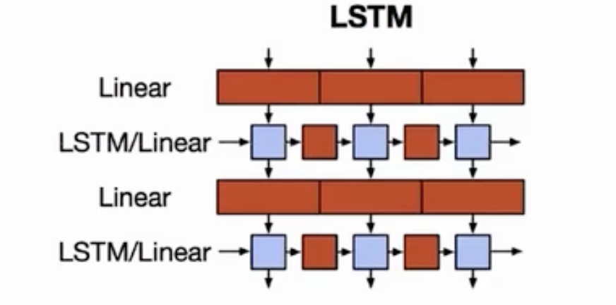
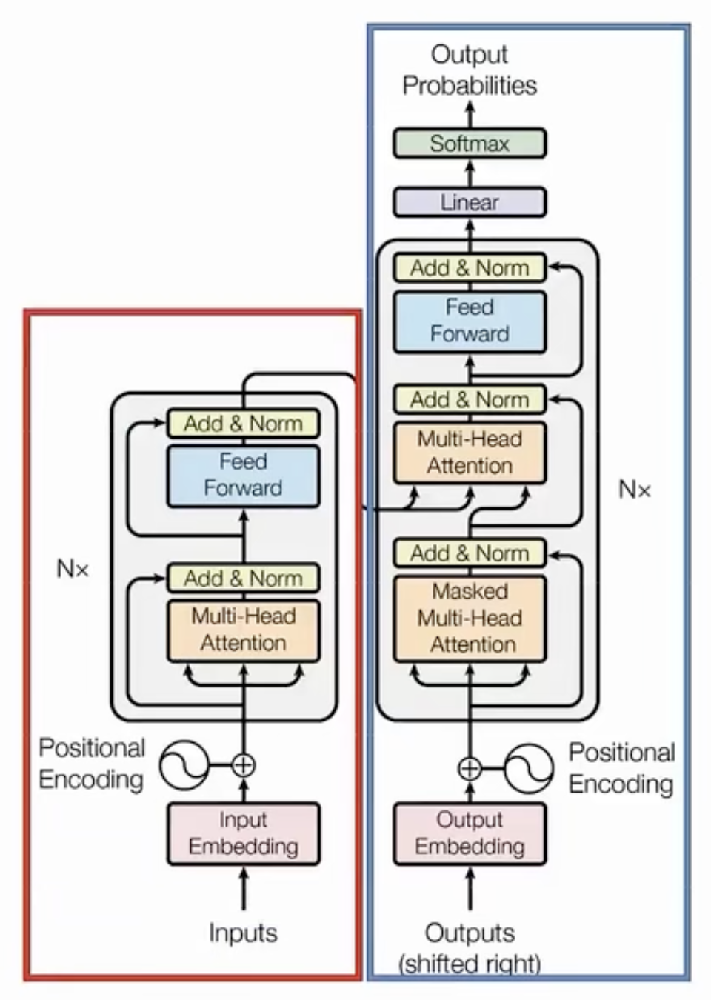
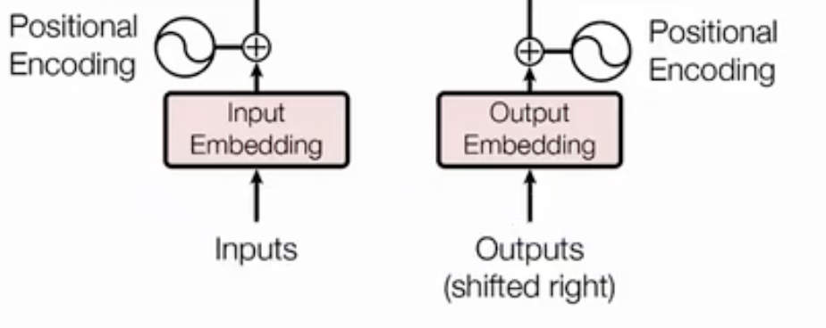
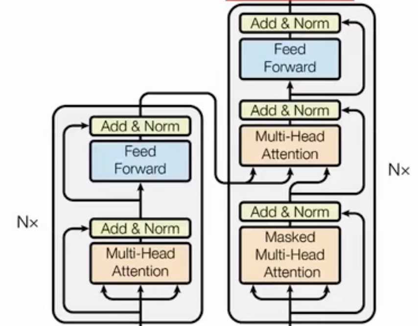
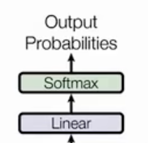

Overview
Before explaining what a transformer is, let's review RNNs first. RNNs can perform well in many tasks, especially with three-dimensional datasets, but their limitations are also very apparent.
The Figure 1 shows a simple two-layer LSTM. We can easily observe a disadvantage of RNNs: the network must execute sequentially. In an NLP task, it first needs to calculate (Purple Box) and get a representation of the first position (Red Box), then calculate the representation of the second position, and so on.
Figure 1: Simple two-layer LSTM structure
In this case, the neural network cannot fully use the GPU for parallel computing, which is inefficient and results in wasted resources. Although RNNs have many variants, such as GRUs and LSTMs, they still require attention mechanisms to address issues like information bottlenecks.
Can we completely abandon RNNs for NLP tasks?
The answer is obviously YES!!! Google researchers published "Attention Is All You Need" in 2017. The title itself answers this question.
Well, let's first take a closer look at the transformer strucuter. We can see that it is also an encoder and decoder structure. The encoder is outlined in red, and the decor is represented in blue.
Figure 2: Transformer sturcture with encoder and decoder
The first layer is input layer. In NLP task, the input most likely as a text, the first layer is going to devide the input text to many small unit(called token).
There are two key differences compared to RNNs. First, the transformer uses BPE (Byte Pair Encoding) to divide the input text. Second, the transformer incorporates the position of tokens in the sequence, a feature known as positional encoding.
Figure 3: Transformer sturcture input layer
Next is a main component of the transformer, which is a stack of several encoder/decoder blocks.
It is worth noting that the blocks in different layers of the encoder/decoder blocks have exactly the same structure, and with the only difference being their parameters. This is how the transformer achieves a deeper and more expressive model through this stacking approach in NLP.
Figure 3: Transformer sturcture main network
The final layer is simply a linear output layer followed by a softmax function to produce a probability distribution. During training, it still uses cross-entropy loss\[H(p, q) = - \sum_{i=1}^{N} p(i) \log q(i)\] to update the model's weights.
Figure 4: Transformer sturcture output layer
This is the overview of the Transformer structure.